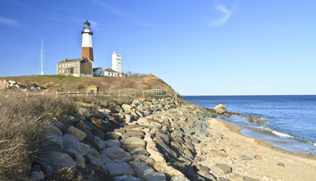
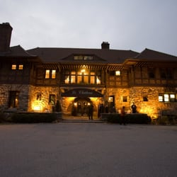

History

History
- I was born in Long island New York on May 10th 1999. I have a twin sister Brielle and a little brother Ryan. We lived in long Island for about 2 years and moved to Newtown Connecticut.
- I went to Newtown highschool and played Lacrosse up until senior year
- Over the summer into college I worked at Ferris Acres Creamery and Le Chateau which is a wedding catering hall in South Salem New York
- I chose to go to The University Of Maine and went in as an undecided Engineering major and switched into Mechanical Engineering technology. This semester I then switched into finance as I didnt enjoy MET as much as I thought.
